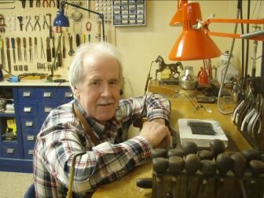
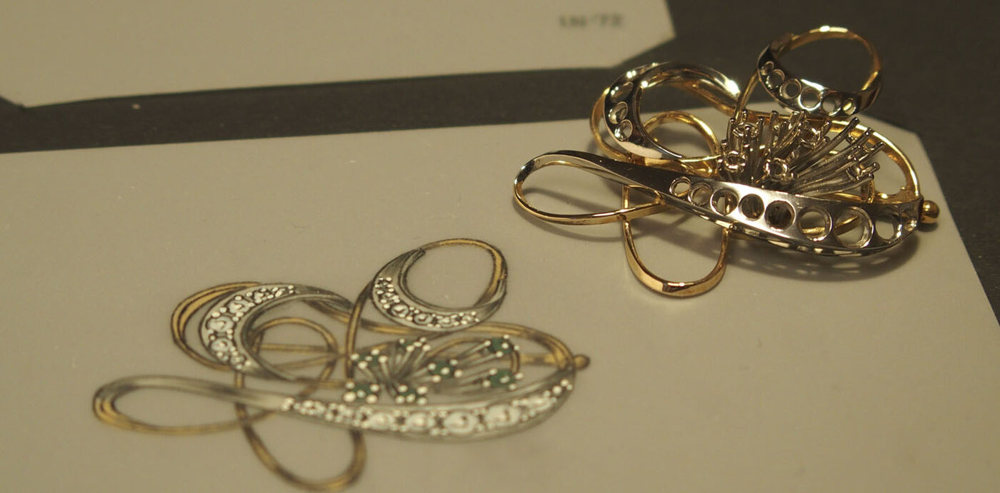
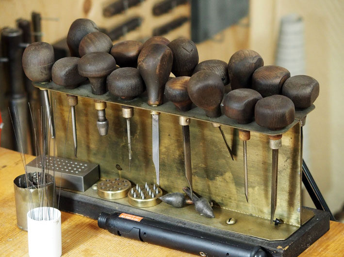
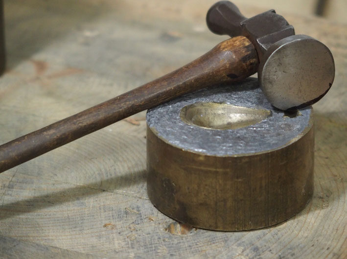
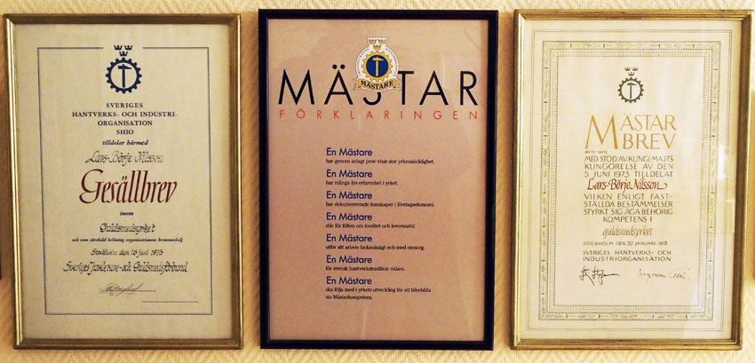
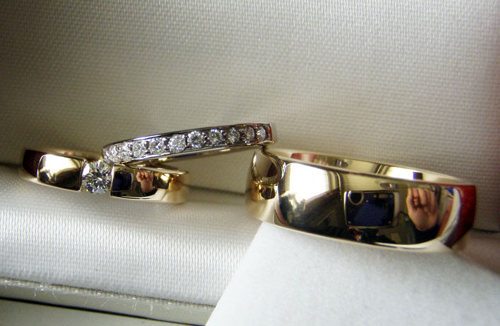
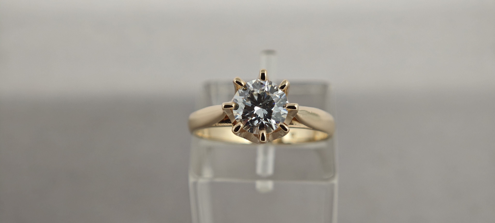
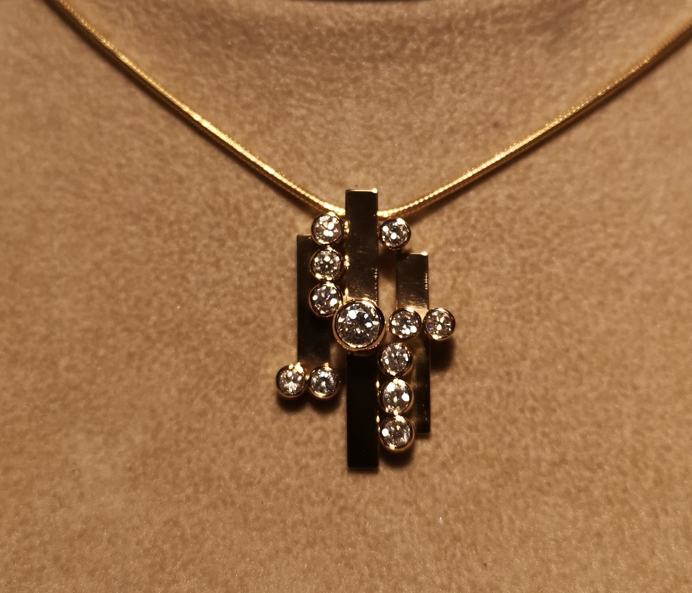

Smycken skapade för hand - i över 50 år.
Ateljétillverkade förlovnings- och vigselringar samt juvelsmycken, formgivna tillsammans med dig av guldsmedsmästare Lars-Börje Nilsson.
- Sedan 1974Verkstadsateljé i Örnsköldsvik
- Över 50 åri guldsmedsyrket
- Mästarbrevyrkets högsta kvalitetsbevis

Personlig service och lång erfarenhet
Vi är ett företag specialiserat på tjänster inom guldsmedsbranschen. Hos oss möts du av guldsmedsmästare Lars-Börje Nilsson, med över 50 års erfarenhet inom yrket.
Vi tillhandahåller det mesta inom branschen via ett beställningssortiment. Vår specialitet är ateljétillverkade förlovnings- och vigselringar samt juvelsmycken.

Från idé till unik design
Tillsammans med dig tar vi fram en skiss utifrån dina idéer och önskemål, för att sedan skapa smycken som passar din personliga stil.
Våra tjänster

Gesällbrev och Mästarbrev
Mästarbrevet är det högsta beviset på yrkesskicklighet inom ett hantverksyrke. Det garanterar stort yrkeskunnande och erfarenhet, men också pålitlighet som hantverksföretagare.
Gesällbrevet är hantverkarnas egen kvalitetsgaranti och visar att yrkeskunskaperna är godkända av branschen.

Ett urval av vårt arbete
Varje smycke tillverkas för hand i ateljén.






Hantverk med historia
Vi har drivit butik och verkstadsateljé i Örnsköldsvik sedan 1974. Vid årsskiftet 2003 stängde butiken vid Stora Torget 1 och verkstadsateljén flyttade till Gullvik. Sedan 2016 finns ateljén i Gottne.
Hitta till ateljén